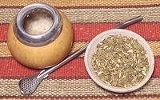

|
MatéParaguay, Uruguay, Argentina, Brazil, Chile - Mate | ||||
| Makes: Effort: Sched: DoAhead: |
Lots ** 10 min No |
The favorite beverage of the South American Southern Cone. Here we present a practical method for North Americans. See also Background and Traditional. | |||
|
4 32 |
T oz |
Yerba Mate (1) Water 170°F/77°C |
Make - (10 min)
|